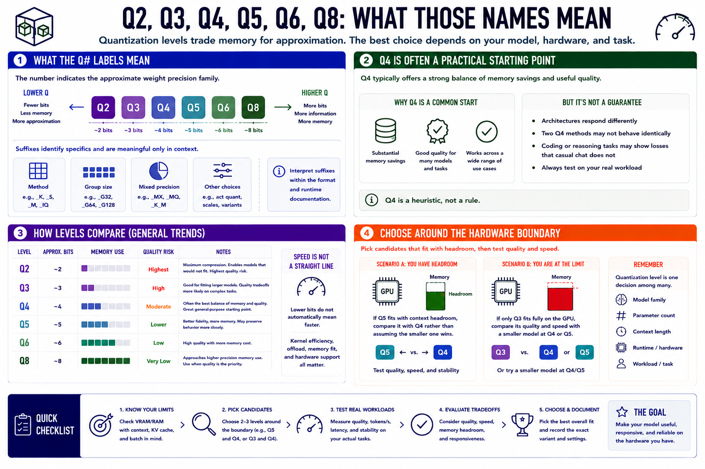

Understanding Quantization Levels
Connecting to LMS... Progress: in progress

Narration
Local quantized model names often include labels such as Q2, Q3, Q4, Q5, Q6, or Q8. At a high level, the number indicates the approximate weight precision family: lower levels use less memory and usually accept more approximation, while higher levels retain more information and require more space. Suffixes identify specific methods, group sizes, or mixed-precision choices and are meaningful only in the context of that format and runtime.
Q4 variants are often a practical starting point because they provide substantial memory savings while preserving useful quality for many models and tasks. That is a heuristic, not a guarantee. A particular architecture may respond differently, two Q4 methods may not behave identically, and a coding or reasoning task may reveal losses that casual conversation does not.
Q2 and Q3 can make otherwise inaccessible models fit, but aggressive compression increases quality risk. Q5 and Q6 consume more memory and may preserve behavior more closely. Q8 often approaches the memory cost of higher precision while remaining useful when quality is prioritized and hardware has room. Speed does not increase monotonically as bits decrease; kernel efficiency, offload, memory fit, and hardware support all matter.
Choose candidates around the hardware boundary. If Q5 fits with context headroom, compare it with Q4 rather than assuming the smaller one wins. If only Q3 fits fully on the GPU, compare its quality and speed with a smaller model at Q4 or Q5. Quantization level is one decision among model family, parameter count, context, runtime, and workload.